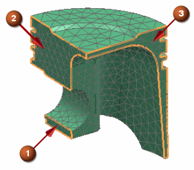
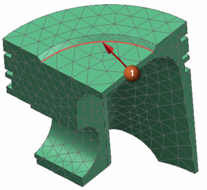
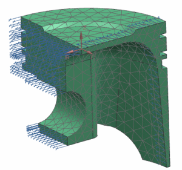

Create symmetry constraints
Because you are working with one quarter of a symmetric model, symmetric conditions must be applied to mirror the displacement condition at the symmetry planes.
 User Defined Constraint (Loads and Conditions group→
User Defined Constraint (Loads and Conditions group→ Constraint Type list)
Constraint Type list)
-
Name
-
Symmetry_Constraint
-
 Rotate the model to the orientation shown in the following figure.
Rotate the model to the orientation shown in the following figure.
-



-
Displacement CSYS
Cylindrical

-
 CSYS of Object (Local)
CSYS of Object (Local)
-

This selection infers a new local cylindrical coordinate system.
-
DOF2
 Fixed
Fixed
-
Apply

Leave the User Defined Constraint dialog box open for the next step.